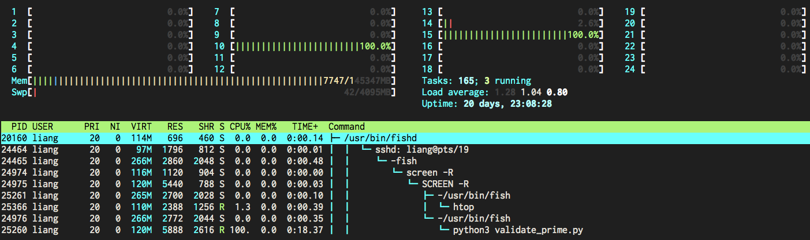
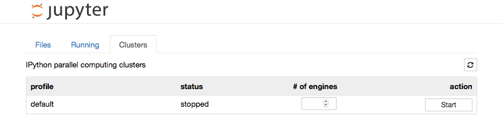

Aweful feelings ...
Engineers' time is more valuable than computing, but many algorithms is hard to make it parallel.
Liang Bo Wang (亮亮), 2015-04-22
亮亮 under CC 4.0 BY license
Esc to overview
← → to navigate


Second half will be about my intern at MSRA (won't share the slide) in free discussion form.
Engineers' time is more valuable than computing, but many algorithms is hard to make it parallel.
Not hard to implement if your tasks are independent. Here we focus on the easiest pattern:
Apply same program on a bunch of input.
PRIMES = [int(l) for l in open('prime_list.txt')]
def is_prime(n):
if n % 2 == 0:
return False
sqrt_n = int(math.floor(math.sqrt(n)))
for i in range(3, sqrt_n + 1, 2):
if n % i == 0:
return False
return True
Validate them one-by-one and benchmark by timeit
def orig_way():
ans = [is_prime(prime) for prime in PRIMES]
return ans
from timeit import timeit
timeit('orig_way()', 'from __main__ import orig_way',
number=3) # return total time of all runs

Multithread, threading, does not work as expected because of GIL.
 (From David Beazley's Understanding GIL)
(From David Beazley's Understanding GIL)
>>> from validate_prime import is_prime, PRIMES
>>> from multiprocessing import Pool
>>> p = Pool(2) # max concurrent processes
>>> p.map(is_prime, PRIMES[:4])
[True, True, True, True]
>>> # Ctrl-C / Ctrl-Z
Traceback x N ... endless
BOOOOOOOOM!! # NEVER run this interactively
Still not safe in interactive mode. Provide some async APIs, which immediately returns a Future object.
from concurrent.futures import ProcessPoolExecutor
def use_process():
with ProcessPoolExecutor(4) as executor:
all_ans = executor.map(is_prime, PRIMES)
return all_ans # block at leaving `with` block
use_process()
executor = ProcessPoolExecutor(4)
# every submit returns a future, nonblocking
futures = [executor.submit(is_prime, p)
for p in PRIMES[:6]]
while not all(map(lambda f: f.done(), futures)):
print('do sth else, waiting')
sleep(1)
# get result from done futures
print([f.result() for f in future_ans])
$ python3 demo_concurrent_async.py
do sth else, waiting
do sth else, waiting
do sth else, waiting
do sth else, waiting
[True, True, True, True, True, False]
More about concurrent.futures.Future on official documentation.
# replace ProcessPoolExecutor with ThreadPoolExecutor
def use_thread():
with ThreadPoolExecutor(4) as executor:
ans = executor.map(is_prime, PRIMES)
return ans
You don't gain computation boost by this.
Ways to speed up using standard library so far:
Demo codes are under /demo_code/builtin-cpuheavy
> python3 benchmark.py
# Minimum time average of 3 in 3 repeats
Straight: 42.10
Multithread: 39.47
Multiprocess: 7.98
You don't get a 12x speed up because of the forking process overhead.
Simply, awesome.
Trivial for Python 3.4+, which comes along with pip.
# For Debian/Ubuntu, apt-get install ipython3-notebook
pip3 install ipython[all]
Windows? Try Anaconda(Miniconda) scientific Python solution, which automatically manages both python and external dependencies.Get a *unix system.
conda install ipython-notebook
# or inside a conda virtual env,
conda create -n ipy python=3.4 ipython-notebook
activate ipy
In [1]: from IPython.parallel import Client
...: rc = Client() # connect controller
In [2]: dview = rc[:] # return a View
Adapted from the official docs
$ ipcluster start
# [IPClusterStart] Using existing profile dir: '.../profile_default'
# [IPClusterStart] Starting ipcluster with [daemon=False]
# ... (automatically set up controller and engines locally)
Or use IPython Notebook to start

In [1]: from IPython.parallel import Client
...: rc = Client()
In [2]: rc.ids
Out[2]: [0, 1, 2, 3]
In [3]: dview = rc[:] # DirectView use all engines
In [4]: with dview.sync_imports():
...: import math # import on all engines
In [5]: ar = dview.map_sync(is_prime, PRIMES[:8]) # block
In [6]: ar.get()
Out[6]: [True, True, True, True, True, False, True, True]
# (continued on next page)
In [1]: %%px # run on all engines by ipython magic
...: import numpy as np
...: rand_n = np.random.randint(10, 2)
In [2]: dview['talk'] = 'Kaohsiung.py' # spread variables
In [3]: dview.scatter('a', list(range(8)))
...: dview['a'] # and collect them back
Out[3]: [[0, 1], [2, 3], [4, 5], [6, 7]]
In [4]: dview.gather('a') # in merged way
Out[4]: [0, 1, 2, 3, 4, 5, 6, 7]
Try this online IPython notebook (hosted by Notebook Viewer)
Download it as an ipython notebook and execute it.
ipython notebook
# Luanch IPython notebook server
# on http://localhost:8888/
# ... (terminated by Ctrl-C/Ctrl-Z)
Decorator View.parallel wraps your function as a parallel task runner, which works the same as previous way.
@dview.parallel(block=False)
def my_work(arg1, arg2):
pass
my_work.map(all_input1, all_input2)
View we used before was DirectView, a one-to-one mapping of all available engines. Input tasks was first split then passed to engines before execution.
Another view called LoadBalancedView passes the input tasks to idle engines on the fly to prevent task congestion in busy engines.
rc = Client()
lbview = rc.load_balanced_view()
Visualize and demo in this notebook.
More Python packages required: pandas, matplotlib, and seaborn. On Anaconda, the installation is as trivial as one single command.
conda install pandas matplotlib seabornA deliberate worst case for preallocated task.
Optimally should only take around 3 seconds.
Note the space between adjacent tasks.
If tasks of different engines complete at the same time, they stocked at the load balancer so a longer pause required. (see randomized work for comparison)
All engines run the exactly same number of tasks (shown by color)
Some engines run fewer tasks if their previous work load are heavier. Pause space are shorter since they return randomly.
ipcluster to start the cluster.ipcontroller and ipcluster engines.<profile_dir>/security/ipcontroller-engine.jsonMore detailed guide: PyBroMo's wiki.
ipython profile create --parallel --profile=parallel
# on master
ipcontroller --profile=parallel
# on slave(s)
ipcluster engines --profile=parallel \
--file=/path/to/ipcontroller-engine.json
# or modify path of `c.IPEngineApp.url_file` in
# ~\.ipython\profile_parallel\ipengine_config.py
Then use it normally by rc = Client(profile='parallel')
What if we want to add workers dynamically during heavy load?
Celery is an asynchronous distributed task queue. RabbitMQ is a message broker which implements the Advanced Message Queuing Protocol (AMQP)
From Abhishek Tiwari,
AMQP, RabbitMQ and Celery - A Visual Guide For Dummies
# Application under tasks.py
app = Celery('tasks', broker='amqp://guest@localhost//')
@app.task
def is_prime(n):
# ...
# run Celery workers: celery -A tasks worker
# call the task
from tasks import is_prime
result = is_prime.delay(PRIME)
print(result.get())
| builtin | ipy parallel | celery | |
|---|---|---|---|
| high level apis | ✔ | ✔ | ✔ |
| spreading data | △ | ✔ | △ |
| interactive mode | ✕ | ✔ | ✔ |
| scale across machines | ✕ | ✔ | ✔ |
| hot add/drop workers | ✕ | △ | ✔ |
| overhead (relatively) | s | m | l |
✔ = trivial; △ = some lines of code; ✕ = plenty lines of code
they can work as partners : )
But that comes with price